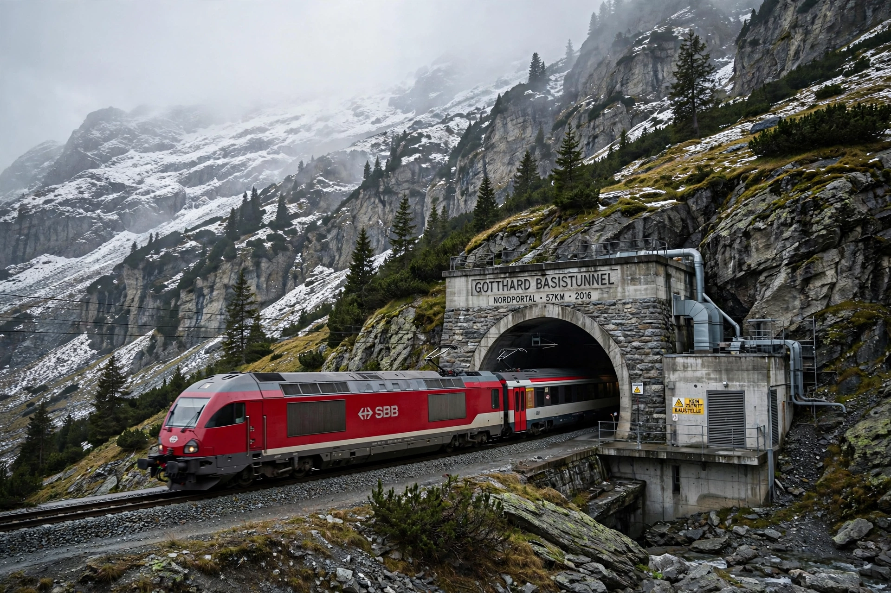

Gotthard Base Tunnel
From Wikipedia, the free encyclopedia

At the Gotthard south portal.The Gotthard Base Tunnel (GBT; German: Gotthard-Basistunnel) is a 57.1 km railway base tunnel through the Alps in Switzerland and the world\'s longest railway tunnel. Opened on 1 June 2016 after 17 years of construction and about CHF 9.6 billion cost, its two single-track tubes (plus a service tunnel) carry high-speed passenger trains at up to 230 km/h and heavy freight between northern and southern Europe, cutting Zurich–Milan to under three hours and shifting Alpine freight from road to rail.
Project
The tunnel is the centrepiece of Switzerland\'s AlpTransit (NRLA) programme, approved by referendum (1992) alongside the Lötschberg Base Tunnel (2007) and Ceneri Base Tunnel (2020). It runs from Erstfeld to Bodio with up to 2,300 m of rock above it; multifunction stations at Sedrun and Faido allow crossings and evacuation.
Construction
Four tunnel boring machines and conventional blasting excavated 31 million tonnes of rock; nine workers died in construction accidents. Temperatures in the headings reached 46 °C, requiring cooling. The tunnel replaced the winding 1882 Gotthard mountain route (15 km summit tunnel), which still serves regional and scenic trains.
Impact
Capacity is about 260 trains a day (mostly freight); journey times and reliability improved, though full benefits await completion of access routes in Germany and Italy. Celebrations in 2016 drew European leaders through a tunnel dubbed a \'cathedral of engineering\'.